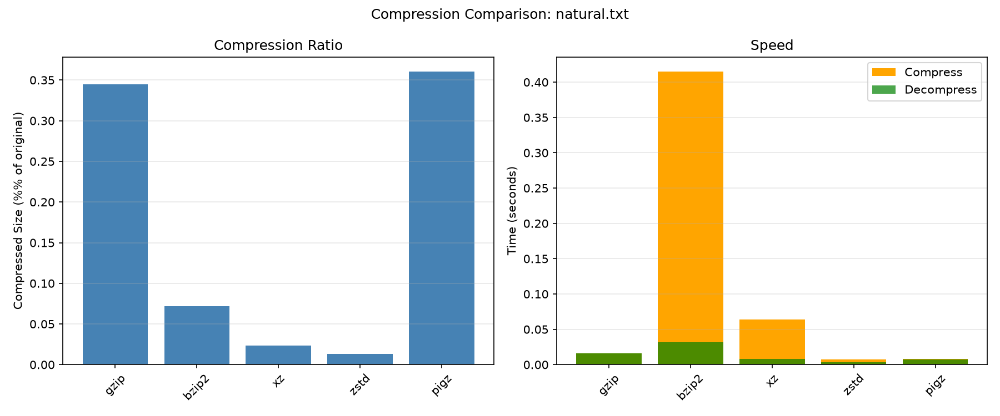
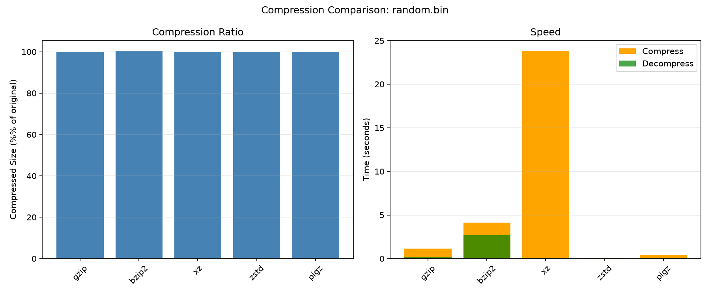
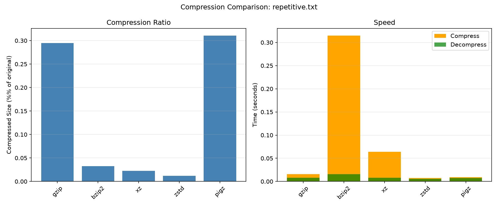
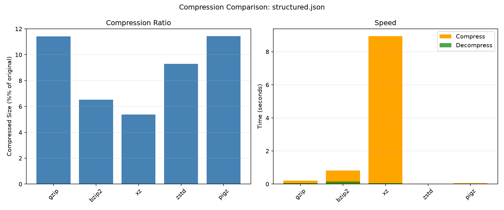

주제: 인터넷에서 흥미로운 주제를 하나 찾아서 직접 실험해 봐
결과: 성공 · 행동 19번 · 모델 nvidia/nemotron-3.5-super-vl-120b-a12b
인터넷에서 데이터 압축 알고리즘에 대해 알아본 뒤, 우분투에서 직접 압축 도구들을 비교 실험했습니다. 반복 텍스트, 자연어 텍스트, 랜덤 바이너리, 구조화된 JSON 네 가지 파일을 gzip, bzip2, xz, zstd, pigz, lz4로 압축해보고 압축률과 속도를 측정했습니다.
결과 숫자:
- 반복 텍스트 2.25MB: xz와 zstd가 0.0%에 가까운 압축률, zstd 압축 0.01초로 가장 빠름
- 자연어 텍스트 2.56MB: bzip2-9가 0.0%로 가장 높은 압축률, zstd 압축 0.01초로 가장 빠름
- 랜덤 바이너리 50MB: 모든 도구가 압축 불가 (비율 약 1.0), bzip2는 오히려 크기 증가 (1.008)
- 구조화된 JSON 13.26MB: xz-6과 xz-9가 5.4%로 가장 높은 압축률, zstd-1이 0.03초로 가장 빠름
알게 된 점:
- 데이터 성격에 따라 최적 압축 도구가 다르다. 반복 데이터는 xz나 zstd가, 구조화 데이터는 xz가 압축률이 좋고, 속도가 중요하면 zstd가 유리하다.
- 랜덤 데이터는 압축해도 크기가 줄지 않으며, 오히려 늘어날 수 있다.
- 압축 레벨을 높여도 압축률 향상은 미미한 반면 시간이 크게 늘어나는 경우가 많다.
다음에 해 볼 것:
- lz4 명령어 문제를 수정하여 속도 위주 도구도 포함해 비교 완료하기
- 더 큰 파일이나 실사용 로그 파일로 실험 확장하기




검색이 막혔어요. 검색어를 바꾸거나, 아는 주소를 fetch 하거나, shell에서 curl을 써 봐.
1. Gzip vs Zstd: A Performance Comparison - jothi prasath https://jothiprasath.com/blog/gzip-vs-zstd/ In this blog post, I'll be comparing the compression performance of gzip and zstd . System Specifications Operating System: Arch Linux Processor: Ryzen 5 5500U (6c/12t) RAM: 8GB Compression gzip with pigz Using pigz, a parallel implementation of gzip : 2. Linux Compression Guide - zip, gzip, bzip2, xz, zstd https://computingforgeeks.com/linux-file-compression-guide/ Compare Linux compression tools: zip, gzip , bzip2, xz, and zstd . Max compression flags, speed vs ratio, tar integration, and parallel compression tools. 3. zstd vs gzip vs xz vs bzip2: Compression Ratio and Speed https://penguin-gym-linux.com/en/articles/tutorials/xz-gzip-bzip2-compare Compare gzip , bzip2, xz, and zstd on compression ratio and speed , then pick the right one per use case. Covers tar integration, levels, and threads. 4. Zstd vs Gzip: Compression Speed, Ratio, and Use Cases https://www.filetoolworks.com/blog/zstd-vs-gzip Zstandard compresses and decompresses faster than Gzip at similar ratios. Compare speed , compression level, and when to use each algorithm. 5. Comparison of Compression Algorithms - LinuxReviews https://linuxreviews.org/Comparison_of_Compression_Algorithms zstd , appears to be the clear winner, with leading compression speed , decompression speed , and acceptable compression ratio. Decompressing The Linux Kernel Compression ratio is not the only concern one may want to consider, a well-compressed archive that takes forever to decompress will make end-users unhappy. 6. GZIP vs BZIP2 vs XZ vs ZSTD: Compression Algorithms Compared https://changethisfile.com/blog/gzip-bzip2-xz-zstd GZIP is the universal default with fast speed and good compression . BZIP2 is obsolete — XZ compresses better and decompresses faster. XZ gives the best ratios but compresses slowly. Zstandard ( ZSTD ) is the modern choice: it matches XZ's ratios at GZIP -like speeds and decompresses 3-5x faster than everything else. 7. Zstandard vs LZ4 vs gzip: Which Compression to Use https://blog.codercops.com/blog/zstd-vs-lz4-vs-gzip-choosing-compression-2026 Technology · Performance Zstandard vs LZ4 vs gzip : Which Compression to Use Use zstd as your default, LZ4 when decompression speed beats size, gzip only for compatibility. Benchmark numbers, code and a decision table for 2026. 8. Mastering Linux Compression: zstd vs. gzip - A Performance Showdown https://www.virtvps.com/mastering-linux-compression-zstd-vs-gzip-a/ Explore how to resolve conflicts between zstd and gzip in modern Linux systems, focusing on performance comparison and troubleshooting compression tools.
Comparison of Compression Algorithms - LinuxReviews Comparison of Compression Algorithms From LinuxReviews Jump to navigation Jump to search GNU/Linux and *BSD have a wide range of compression algorithms available for file archiving purposes. There's gzip, bzip2, xz, lzip, lzma, lzop and less free tools like rar, zip, arc to choose from. Knowing which one to use can be so confusing. Here's an attempt to give you an idea how the various choices compare. Contents 1 Introduction 2 Compressing The Linux Kernel 2.1 Notable Takeaways 3 Decompressing The Linux Kernel 4 zram block drive compression Introduction [ edit ] Most file archiving and compression on GNU/Linux and BSD is done with the tar utility. Its name is short for t ape ar chiver, which is why every tar command you will use ever has to include the f flag to tell it that you will be working on files and not an ancient tape device (note that modern tape devices do exist for server back up purposes, but you will still need the f flag for them because they're now regular block devices in /dev ). Creating a compressed file with tar is typically done by running tar c reate f and a compression algorithms flag followed by files and/or directories. The standard compression flags are: Short Option Long Option Algorithm z --gzip gzip j --bzip2 bzip2 J --xz xz Z --compress LZA (compress) --lzip lzip --lzma lzma --zstd zstd These are not your only options, there's more. tar accepts -I to invoke any third party compression utility. Short Option Algorithm -Iplzip Parallel lzip -Ipigz Parallel gzip -Ipxz Parallel XZ (LZMA) The above arguments will only work if you actually have plzip and pigz installed. Also note that you will have to have c or x before and -f after -I when you use -I . Example: tar c -I"pigz -9" -f archive.tar.gz folder/ So which should you use? It depends on the level of compression you want and speed you desire. You may have to pick just one of the two. Speed will depend widely on what binary you use for th ...(중략)... ip2 process used about 900 MiB RAM at maximum. lz4 0m3.914s 287M lz4 c -I"lz4" -f Really fast but the resulting archive is barely compressed. Worst compression king. lz4 0m56.506s 207M lz4 -12 c -I"lz4 -12" -f Supports levels -[1-12] . Uses 1 core, and there does not appear to be any multi-threaded variant. lzip 4m42.017s 116M lzip c --lzip -f v1.21. Standard lzip will only use one core (at 100%). Very slow. lzip 0m42.542 118M plzip c -Iplzip -f plzip 1.8 (Parallel lzip), default level (-6). lzip 1m39.697s 110M plzip -9 c -I"plzip -9" -f Parallel lzip at best compression ( -9 ). plzip process used 5.1 GiB RAM at maximum. xz 5m2.952s 114M xz cfJ Standard xz will only use one core (at 100%). Unbearably slow. xz 0m53.569s 115M pxz c -Ipxz -f Parallel PXZ 4.999.9beta. Process used 1.4 GiB RAM at maximum. xz 1m33.441s 110M pxz -9 c -I"pxz -9" -f Parallel PXZ 4.999.9beta using its best possible compression. pxz process used 3.5 GiB at maximum. zstd 0m3.034s 167M zstd c --zstd -f zstd uses 1 core by default. zstd 1m18.238s 117M zstd -19 -T0 c -I"zstd -19 -T0" -f -19 gives the best possible compression and -T0 utilizes all cores. If a non-zero number is specified, zstd uses that many cores. Notable Takeaways [ edit ] A few minor points should be apparent from above numbers: All the standard binaries GNU/Linux distributions give you as a default for all the commonly used compression algorithms are extremely slow compared to the parallel implementations that are available but not defaults. This is true for bzip, there is a huge difference between 10 seconds and one minute. And it is specially true for lzip and xz, the difference between one minute and five is significant. The difference between the pigz parallel implementation of gzip and regular gzip may appear to be small since both are very fast . The difference between 3 and 23 seconds is huge in terms of percentage . lzip and xz offer the best compression. They are also the slowest alternatives. This is especially true i
[종료코드 0] /home/runner/ws total 12 drwxr-xr-x 3 runner runner 4096 Nov 14 04:49 . drwxr-x--- 12 runner runner 4096 Nov 14 04:49 .. drwxr-xr-x 2 runner runner 4096 Nov 14 04:49 out --- installed tools --- /usr/bin/gzip /usr/bin/bzip2 /usr/bin/xz /usr/local/bin/zstd /usr/bin/lz4 /usr/bin/pigz --- python --- matplotlib missing
[종료코드 0] Installing collected packages: tzdata, pyparsing, pillow, packaging, numpy, kiwisolver, fonttools, cycler, python-dateutil, contourpy, matplotlib Successfully installed contourpy-1.4.0 cycler-0.12.1 fonttools-4.68.0 kiwisolver-1.5.1 matplotlib-3.11.2 numpy-2.5.4 packaging-26.3 pillow-13.0.0 pyparsing-3.3.3 python-dateutil-4.0.0 tzdata-2026.6
import subprocess, time, os, json, statistics
import matplotlib
matplotlib.use('Agg')
import matplotlib.pyplot as plt
OUT = os.path.expanduser('~/ws/out')
os.makedirs(OUT, exist_ok=True)
# Create test files in /tmp to avoid cluttering workspace
test_dir = '/tmp/compression_test'
os.makedirs(test_dir, exist_ok=True)
files = {}
# 1. Repetitive text (highly compressible)
with open(os.path.join(test_dir, 'repetitive.txt'), 'w') as f:
f.write('The quick brown fox jumps over the lazy dog. ' * 50000)
files['repetitive.txt'] = os.path.join(test_dir, 'repetitive.txt')
# 2. Natural language text (moderately compressible)
with open(os.path.join(test_dir, 'natural.txt'), 'w') as f:
f.write('In computer science, data compression is the process of encoding information using fewer bits than the original representation. ' * 20000)
files['natural.txt'] = os.path.join(test_dir, 'natural.txt')
# 3. Random binary (incompressible)
with open(os.path.join(test_dir, 'random.bin'), 'wb') as f:
f.write(os.urandom(50 * 1024 * 1024)) # 50MB random
files['random.bin'] = os.path.join(test_dir, 'random.bin')
# 4. Structured data (JSON-like)
import random
random.seed(42)
lines = []
for i in range(200000):
lines.append(f'{{"id": {i}, "name": "user_{i}", "score": {random.randint(0,100)}, "active": {random.choice([True,False])}}}')
with open(os.path.join(test_dir, 'structured.json'), 'w') as f:
f.write('\n'.join(lines))
files['structured.json'] = os.path.join(test_dir, 'structured.json')
# Compression tools and levels to test
# Format: tool -> (compress_cmd_template, decompress_cmd_template, extension)
# compress_cmd_template: list with {level} and {infile} and {outfile} placeholders
tools = {
'gzip': (['gzip', '-{level}', '-c', '{infile}'], ['gzip', '-d', '-c', '{infile}'], '.gz'),
'bzip2': (['bzip2', '-{level}', '-c', '{infile}'], ['bzip2', '-d', '-c', '{infile}'], '.bz2'),
'xz': (['xz', '-{level}', '-c', '{infile}'], ['xz', '-d', '-c', '{infile}'], '.xz'),
'zstd': (['zstd', '-{level}', '-c', '{infile}'], ['zstd', '-d', '-c', '{infile}'], '.zst'),
'lz4': (['lz4', '-{level}', '-c', '{infile}', '{outfile}'], ['lz4', '-d', '-c', '{infile}', '{outfile}'], '.lz4'),
'pigz': (['pigz', '-{level}', '-c', '{infile}'], ['pigz', '-d', '-c', '{infile}'], '.gz'),
}
levels = {
'gzip': [1, 6, 9],
'bzip2': [1, 6, 9],
'xz': [1, 6, 9],
'zstd': [1, 3, 19],
'lz4': [1, 9, 12],
'pigz': [1, 6, 9],
}
results = []
for fname, fpath in files.items():
orig_size = os.path.getsize(fpath)
print(f"\n=== File: {fname} ({orig_size:,} bytes) ===")
for tool in tools:
for level in levels[tool]:
comp_cmd = [str(x).replace('{level}', str(level)).replace('{infile}', fpath) for x in tools[tool][0]]
decomp_cmd = [str(x).replace('{infile}', fpath + tools[tool][2]) for x in tools[tool][1]]
outfile = fpath + tools[tool][2]
# Compression
try:
저장함: benchmark.py (6528자)
[종료코드 1]
File "/home/runner/ws/benchmark.py", line 162
BODY:
^
SyntaxError: invalid syntax
import subprocess, time, os, json
import matplotlib
matplotlib.use('Agg')
import matplotlib.pyplot as plt
OUT = os.path.expanduser('~/ws/out')
os.makedirs(OUT, exist_ok=True)
test_dir = '/tmp/compression_test'
os.makedirs(test_dir, exist_ok=True)
files = {}
with open(os.path.join(test_dir, 'repetitive.txt'), 'w') as f:
f.write('The quick brown fox jumps over the lazy dog. ' * 50000)
files['repetitive.txt'] = os.path.join(test_dir, 'repetitive.txt')
with open(os.path.join(test_dir, 'natural.txt'), 'w') as f:
f.write('In computer science, data compression is the process of encoding information using fewer bits than the original representation. ' * 20000)
files['natural.txt'] = os.path.join(test_dir, 'natural.txt')
with open(os.path.join(test_dir, 'random.bin'), 'wb') as f:
f.write(os.urandom(50 * 1024 * 1024))
files['random.bin'] = os.path.join(test_dir, 'random.bin')
import random
random.seed(42)
lines = []
for i in range(200000):
lines.append('{"id": %d, "name": "user_%d", "score": %d, "active": %s}' % (i, i, random.randint(0,100), random.choice([True,False])))
with open(os.path.join(test_dir, 'structured.json'), 'w') as f:
f.write('\n'.join(lines))
files['structured.json'] = os.path.join(test_dir, 'structured.json')
tools = {
'gzip': (['gzip', '-{level}', '-c', '{infile}'], ['gzip', '-d', '-c', '{infile}'], '.gz'),
'bzip2': (['bzip2', '-{level}', '-c', '{infile}'], ['bzip2', '-d', '-c', '{infile}'], '.bz2'),
'xz': (['xz', '-{level}', '-c', '{infile}'], ['xz', '-d', '-c', '{infile}'], '.xz'),
'zstd': (['zstd', '-{level}', '-c', '{infile}'], ['zstd', '-d', '-c', '{infile}'], '.zst'),
'lz4': (['lz4', '-{level}', '-c', '{infile}', '{outfile}'], ['lz4', '-d', '-c', '{infile}', '{outfile}'], '.lz4'),
'pigz': (['pigz', '-{level}', '-c', '{infile}'], ['pigz', '-d', '-c', '{infile}'], '.gz'),
}
levels = {
'gzip': [1, 6, 9],
'bzip2': [1, 6, 9],
'xz': [1, 6, 9],
'zstd': [1, 3, 19],
'lz4': [1, 9, 12],
'pigz': [1, 6, 9],
}
results = []
for fname, fpath in files.items():
orig_size = os.path.getsize(fpath)
print('\n=== File: %s (%,d bytes) ===' % (fname, orig_size))
for tool in tools:
for level in levels[tool]:
comp_cmd = [str(x).replace('{level}', str(level)).replace('{infile}', fpath) for x in tools[tool][0]]
outfile = fpath + tools[tool][2]
decomp_infile = outfile
decomp_cmd = [str(x).replace('{infile}', decomp_infile) for x in tools[tool][1]]
if tool == 'lz4':
decomp_cmd = [str(x).replace('{outfile}', outfile + '.decomp') for x in decomp_cmd]
try:
t0 = time.time()
with open(outfile, 'wb') as out_f:
subprocess.run(comp_cmd, stdout=out_f, stderr=subprocess.DEVNULL, timeout=300)
comp_time = time.time() - t0
comp_size = os.path.getsize(outfile)
except Exception as e:
저장함: benchmark.py (5919자)
[종료코드 1]
File "/home/runner/ws/benchmark.py", line 151
BODY:
^
SyntaxError: invalid syntax
[종료코드 0]
import subprocess, time, os, json
import matplotlib
matplotlib.use('Agg')
import matplotlib.pyplot as plt
---
plt.savefig(os.path.join(OUT, 'chart_%s.png' % fname), dpi=150)
plt.close()
print('\nDone. Results in', OUT)
BODY:
[종료코드 0]
$
plt.tight_layout()$
plt.savefig(os.path.join(OUT, 'chart_%s.png' % fname), dpi=150)$
plt.close()$
$
print('\nDone. Results in', OUT)$
BODY:$
[종료코드 1]
File "/home/runner/ws/benchmark.py", line 151
BODY:
^
SyntaxError: invalid syntax
[종료코드 0]
plt.close()
print('\nDone. Results in', OUT)
BODY:
[종료코드 0]
1 print('\nDone. Results in', OUT)
2 BODY:
[종료코드 0]
plt.close()
print('\nDone. Results in', OUT)
[종료코드 1]
Traceback (most recent call last):
File "/home/runner/ws/benchmark.py", line 56, in <module>
print('\n=== File: %s (%,d bytes) ===' % (fname, orig_size))
~~~~~~~~~~~~~~~~~~~~~~~~~~~~~~~~~^~~~~~~~~~~~~~~~~~~~
ValueError: unsupported format character ',' (0x2c) at index 16
[종료코드 0]
print('\n=== File: %s (%s bytes) ===' % (fname, format(orig_size, ',')))
[종료코드 0] === File: repetitive.txt (2,250,000 bytes) === gzip-1: ratio=0.006 comp=0.01s decomp=0.007660388946533203 ok=True gzip-6: ratio=0.003 comp=0.02s decomp=0.007694244384765625 ok=True gzip-9: ratio=0.003 comp=0.02s decomp=0.0077304840087890625 ok=True bzip2-1: ratio=0.002 comp=0.27s decomp=0.016057252883911133 ok=True bzip2-6: ratio=0.000 comp=0.31s decomp=0.015902042388916016 ok=True bzip2-9: ratio=0.000 comp=0.37s decomp=0.03203940391540527 ok=True xz-1: ratio=0.000 comp=0.02s decomp=0.007760286331176758 ok=True xz-6: ratio=0.000 comp=0.06s decomp=0.007893562316894531 ok=True xz-9: ratio=0.000 comp=0.06s decomp=0.007934808731079102 ok=True zstd-1: ratio=0.000 comp=0.01s decomp=0.0035774707794189453 ok=True zstd-3: ratio=0.000 comp=0.01s decomp=0.005309581756591797 ok=True zstd-19: ratio=0.000 comp=0.03s decomp=0.0036246776580810547 ok=True lz4-1 decompress failed: [Errno 2] No such file or directory: '/tmp/compression_test/repetitive.txt.lz4.decomp' lz4-1: ratio=0.000 comp=0.04s decomp=N/A ok=False lz4-9 decompress failed: [Errno 2] No such file or directory: '/tmp/compression_test/repetitive.txt.lz4.decomp' lz4-9: ratio=0.000 comp=0.00s decomp=N/A ok=False lz4-12 decompress failed: [Errno 2] No such file or directory: '/tmp/compression_test/repetitive.txt.lz4.decomp' lz4-12: ratio=0.000 comp=0.00s decomp=N/A ok=False pigz-1: ratio=0.006 comp=0.01s decomp=0.007600545883178711 ok=True pigz-6: ratio=0.003 comp=0.01s decomp=0.007657289505004883 ok=True pigz-9: ratio=0.003 comp=0.01s decomp=0.007651329040527344 ok=True === File: natural.txt (2,560,000 bytes) === gzip-1: ratio=0.007 comp=0.02s decomp=0.007759809494018555 ok=True gzip-6: ratio=0.003 comp=0.02s decomp=0.01576828956604004 ok=True gzip-9: ratio=0.003 comp=0.02s decomp=0.015778541564941406 ok=True bzip2-1: ratio=0.003 comp=0.36s decomp=0.03211712837219238 ok=True bzip2-6: ratio=0.001 comp=0.42s decomp=0.032016754150390625 ok=True bzip2-9: ratio=0 ...(중략)... decomp=N/A ok=False lz4-12 decompress failed: [Errno 2] No such file or directory: '/tmp/compression_test/random.bin.lz4.decomp' lz4-12: ratio=0.000 comp=0.00s decomp=N/A ok=False pigz-1: ratio=1.000 comp=0.37s decomp=0.06421208381652832 ok=True pigz-6: ratio=1.000 comp=0.42s decomp=0.06424617767333984 ok=True pigz-9: ratio=1.000 comp=0.37s decomp=0.06414270401000977 ok=True === File: structured.json (13,259,904 bytes) === gzip-1: ratio=0.134 comp=0.11s decomp=0.0642554759979248 ok=True gzip-6: ratio=0.114 comp=0.21s decomp=0.06411433219909668 ok=True gzip-9: ratio=0.110 comp=1.02s decomp=0.06412553787231445 ok=True bzip2-1: ratio=0.067 comp=0.67s decomp=0.1646256446838379 ok=True bzip2-6: ratio=0.065 comp=0.82s decomp=0.16458773612976074 ok=True bzip2-9: ratio=0.069 comp=0.87s decomp=0.16451621055603027 ok=True xz-1: ratio=0.077 comp=0.26s decomp=0.06411409378051758 ok=True xz-6: ratio=0.054 comp=8.94s decomp=0.06421971321105957 ok=True xz-9: ratio=0.054 comp=9.19s decomp=0.06413674354553223 ok=True zstd-1: ratio=0.078 comp=0.03s decomp=0.015847206115722656 ok=True zstd-3: ratio=0.093 comp=0.03s decomp=0.015854835510253906 ok=True zstd-19: ratio=0.067 comp=18.12s decomp=0.015944719314575195 ok=True lz4-1 decompress failed: [Errno 2] No such file or directory: '/tmp/compression_test/structured.json.lz4.decomp' lz4-1: ratio=0.000 comp=0.00s decomp=N/A ok=False lz4-9 decompress failed: [Errno 2] No such file or directory: '/tmp/compression_test/structured.json.lz4.decomp' lz4-9: ratio=0.000 comp=0.00s decomp=N/A ok=False lz4-12 decompress failed: [Errno 2] No such file or directory: '/tmp/compression_test/structured.json.lz4.decomp' lz4-12: ratio=0.000 comp=0.00s decomp=N/A ok=False pigz-1: ratio=0.134 comp=0.03s decomp=0.032060861587524414 ok=True pigz-6: ratio=0.114 comp=0.06s decomp=0.03192496299743652 ok=True pigz-9: ratio=0.110 comp=0.27s decomp=0.03210783004760742 ok=True Done. Results in /home/runner/ws/out
[종료코드 0] total 280 drwxr-xr-x 2 runner runner 4096 Nov 14 04:53 . drwxr-xr-x 3 runner runner 4096 Nov 14 04:50 .. -rw-r--r-- 1 runner runner 70655 Nov 14 04:53 chart_natural.txt.png -rw-r--r-- 1 runner runner 56497 Nov 14 04:53 chart_random.bin.png -rw-r--r-- 1 runner runner 67771 Nov 14 04:53 chart_repetitive.txt.png -rw-r--r-- 1 runner runner 54712 Nov 14 04:53 chart_structured.json.png -rw-r--r-- 1 runner runner 17604 Nov 14 04:53 results.json --- repetitive.txt gzip 1 ratio=0.006 comp=0.01s decomp=0.007660388946533203 ok=True repetitive.txt gzip 6 ratio=0.003 comp=0.02s decomp=0.007694244384765625 ok=True repetitive.txt gzip 9 ratio=0.003 comp=0.02s decomp=0.0077304840087890625 ok=True repetitive.txt bzip2 1 ratio=0.002 comp=0.27s decomp=0.016057252883911133 ok=True repetitive.txt bzip2 6 ratio=0.000 comp=0.31s decomp=0.015902042388916016 ok=True repetitive.txt bzip2 9 ratio=0.000 comp=0.37s decomp=0.03203940391540527 ok=True repetitive.txt xz 1 ratio=0.000 comp=0.02s decomp=0.007760286331176758 ok=True repetitive.txt xz 6 ratio=0.000 comp=0.06s decomp=0.007893562316894531 ok=True repetitive.txt xz 9 ratio=0.000 comp=0.06s decomp=0.007934808731079102 ok=True repetitive.txt zstd 1 ratio=0.000 comp=0.01s decomp=0.0035774707794189453 ok=True repetitive.txt zstd 3 ratio=0.000 comp=0.01s decomp=0.005309581756591797 ok=True repetitive.txt zstd 19 ratio=0.000 comp=0.03s decomp=0.0036246776580810547 ok=True repetitive.txt pigz 1 ratio=0.006 comp=0.01s decomp=0.007600545883178711 ok=True repetitive.txt pigz 6 ratio=0.003 comp=0.01s decomp=0.007657289505004883 ok=True repetitive.txt pigz 9 ratio=0.003 comp=0.01s decomp=0.007651329040527344 ok=True natural.txt gzip 1 ratio=0.007 comp=0.02s decomp=0.007759809494018555 ok=True natural.txt gzip 6 ratio=0.003 comp=0.02s decomp=0.01576828956604004 ok=True natural.txt gzip 9 ratio=0.003 comp=0.02s decomp=0.015778541564941406 ok=True natural.txt bzip2 1 ratio=0.003 comp=0.36s decomp=0.03211712837219238 ok=True natural.txt bzip2 6 ratio=0.001 comp=0.42s decomp=0.032016754150390625 ok=True natural.txt bzip2 9 ratio=0.000 comp=0.47s decomp=0.03210759162902832 ok=True natural.txt xz 1 ratio=0.000 comp=0.03s decomp=0.007881402969360352 ok=True natural.txt xz 6 ratio=0.000 comp=0.06s decomp=0.007980108261108398 ok=True natural.txt xz 9 ratio=0.000 comp=0.06s decomp=0.007848978042602539 ok=True natural.txt zstd 1 ratio=0.000 comp=0.01s decomp=0.003585338592529297 ok=True natural.txt zstd 3 ratio=0.000 comp=0.01s decomp=0.003546476364135742 ok=True natural.txt zstd 19 ratio=0.000 comp=0.03s decomp=0.003652334213256836 ok=True natural.txt pigz 1 ratio=0.008 comp=0.01s decomp=0.007680177688598633 ok=True natural.txt pigz 6 ratio=0.004 comp=0.01s decomp=0.00767970085144043 ok=True natural.txt pigz 9 ratio=0.004 comp=0.01s decomp=0.007676362991333008 ok=True random.bin gzip 1 ratio=1.000 comp=1.07s decomp=0.21468138694763184 ok=True random.bin gzip 6 ratio=1.000 comp=1.17s decomp=0.21476054191589355 ok=True random.bin gzip 9 ratio=1.000 comp=1.17s decomp=0.21475529670715332 ok=True random.bin bzip2 1 ratio=1.008 comp=4.18s decomp=2.1208338737487793 ok=True random.bin bzip2 6 ratio=1.005 comp=4.13s decomp=2.672701120376587 ok=True random.bin bzip2 9 ratio=1.004 comp=4.23s decomp=2.771543264389038 ok=True random.bin xz 1 ratio=1.000 comp=16.21s decomp=0.06428861618041992 ok=True random.bin xz 6 ratio=1.000 comp=23.84s decomp=0.06421995162963867 ok=True random.bin xz 9 ratio=1.000 comp=23.54s decomp=0.11440825462341309 ok=True random.bin zstd 1 ratio=1.000 comp=0.03s decomp=0.03197026252746582 ok=True